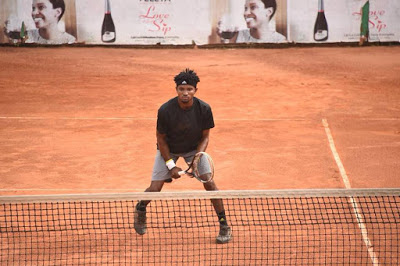
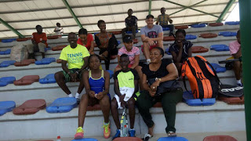
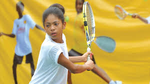

Christmas Gift: Joseph Imeh Set To End Year 2017 As Nigeria's No 1

Joseph Imeh's outstanding performance in the outgoing year 2017 has not gone unnoticed as he has accumulated enough points to shoot him to the top of the rankings as Nigeria's number one male tennis player for the year ending.
Imeh incredibly lost in four final outings (if the NCC Tennis League is added) in 2017 having started out as the winner of the Rainoil Masters series, but this did not affect his rating as one of Nigeria's best players of the year
Ahead of the commencement of the Rainoil Tennis Championship, the runner up at the 2017 CBN Open final was rated as number two just behind ageless Abdulmumin Babalola and while the latter lost out in the quarterfinals, Imeh made it to the final.
With this result, the Ibadan-based tennis kingpin is likely to concede his place as the country's number one player to the budding youngster who also lost the final of the Dala Hard Court championship in Kano to Thomas Otu.
Although the rankings are yet to be officially announced, the chances are pretty high that Imeh will start year 2018 as Nigeria's number one male player, even though he did not win any national tournament in the outgoing year.
His chances are also aided by the fact that he competed against three different players in each of the finals of the national tournaments which he lost.
The young man fondly called Fargo lost to Babalola in the CBN Open final, lost to Otu at the Dala Hard Court final and could not withstand Henry Atseye on clay at the finals of the Rainoil Tennis Championship in Lagos.
Nigerian Tennis Live will publish the full ranking as soon as the points are calculated and made available to our correspondent.
Inyang, Serena Bag Interesting Wins As NTF Debuts With Play Your Age Championship

Gabriel Inyang and Serena Teluwo were among the first winners at the first edition of the Play Your Age tennis championship presently ongoing in Abuja, Nigeria's capital.
According to feelers from the Package B of the National Stadium, the players stormed the venue of the competition from every part of the country to attend inaugural tournament which is the initiative of the Engr. Dayo Akindoju-led Nigeria Tennis Federation (NTF).
In a chat with our correspondent, the president of the NTF had informed that the essence of the tournament is to eradicate age cheats in Nigerian tennis and to ensure that each player plays against counterparts of the same age grade.
He noted that after this tournament, any player found cheating would be banned from the tennis circuit for a minimum of four years, this he added, is the first step in curbing age crisis in the racket game.
The atmosphere, sources revealed, was serene for the players who were there with their parents and their coaches. The likes of Mr. Richard Inyang, Mr and Mrs. Holmes, Mrs. Teluwo were among the parents who were on ground to cheer their children at the stadium.
Rainoil Tennis Championship, Very Timely - NTF President
The organisers of the recently concluded Rainoil Tennis Championship have been hailed for the timely sponsorship of the national tournament, the first on clay in the country in a really long while.
This encomium is coming from none other than the president of the Nigeria Tennis Federation (NTF), Engr. Dayo Akindoju, who noted that the tournament came at a time when the federation was looking at adding more tournaments to the national calendar.
According to him, tennis is beginning to get better in Nigeria and the inaugural edition of the Rainoil championship is a testament to the fact that things have started changing with tennis in the country.
"This tournament came at the right to time to discover new talents and help with the development of the ones already playing on the Nigerian circuit," Engr. Akindoju said at the closing ceremony of the clay court championship won by Abuja-based Henry Atseye.
He noted that such tournaments will be accompanied by grassroots championships as well, as the NTF is looking at rebranding tennis in Nigeria and growing it from the scratch.
"We shall have a lot of this tournament in Nigeria and like I said in the past, we are working on grassroots tennis as well, because we need to discover new talents to replace the ones that are there now.
"Special thanks to the organisers of the Rainoil championship for being very dedidated and for their role in ensuring that tennis is getting better in Nigeria," he added.
The NTF is also presently hosting a junior tournament in Abuja tagged Play Your Age Tennis Championship, to discover new talents and to curb the menace of age cheat in the country's tennis circuit.
Nigerian Tennis Live reports that the tournament which started on Sunday, 17 December, with the arrival of the players, will end on Thursday, 21 December, when the players are expected to leave for their different destinations.
Something Promising Will Come Out Of Play Your Age Championship - Coach Inyang

Richard Inyang, one of the Nigerian coaches presently in Abuja for the Play Your Age Tennis Championship, has lauded the leadership of the Nigeria Tennis Federation (NTF) for its initiative in bringing up such a national junior tournament.
The Engr. Dayo Akindoju-led NTF commenced the first edition of the tournament to ensure that age cheat becomes a thing of the past in the country's tennis, a development which many coaches have embraced almost immediately.
To this end, young players from every part of the country stormed the Package B of the National Stadium in Abuja, with their birth certificates to confirm their ages and play against people within the same age bracket in the tournament.
This new concept has since been hailed by Coach Inyang, who went to Abuja with his son, Gabriel. He noted that expectations are high from the coaches and parents who are in the nation's capital for the tournament and believes that the exercise will yield more positives.
"It is a good way to start grassroots development by the new administration, honestly. This is a really good idea by the NTF, I salute the leadership for such a wonderful initiative.
"I can assure you that if it continues like this, something promising will come out of Nigeria soon. I mean, the kids are excited, they are learning, and are happy to see their counterparts from other parts of the country.
"If my son wins (which I expect), fine. But it not, we take it in good faith. The most important thing is the learning process which I believe is the main reason we are here," he told our correspondent from Abuja.
The tournament is expected to climax on Thursday, 21 December, when the players are expected to leave Abuja for their respective bases.